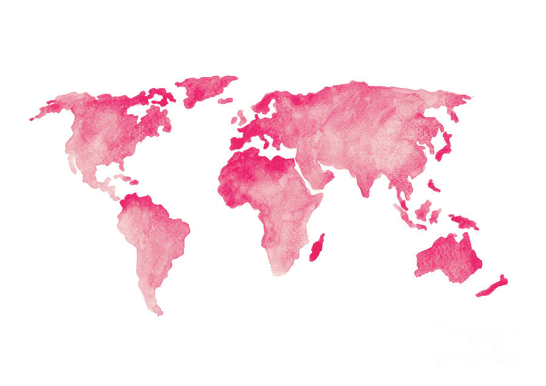
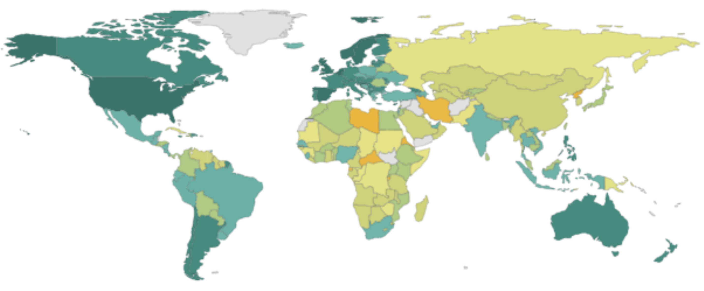
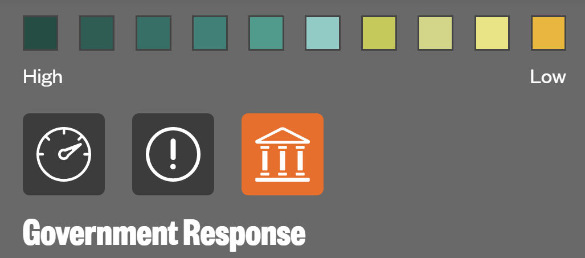

Global Report: Policies From Different Countries
2018 United Nations Study On Government Study
When it comes to human trafficking, countries differ on legislation and punishment for these crimes. The United Nations Office on Drugs and Crime's (UNODOC) annual report came to several important conclusions in how government action has changed over the years.
They found that armed conflicts in regions increase the opportunity for vulnerability and exploitation for trafficking, that in the last decade, more laws have been made to tackle this issue,and that improvements in data collection has allowed for better detection across nations. On the other hand, the convictions of human trafficking nowhere meets the greater detection the UNODOC has found.

"There appears to be hardly any risk for traffickers to face justice." -UNODOC 2018 Report
Government Rating On Human Trafficking
The Global Slavery Index measures government response on five goals:
1) Survivors of slavery are identified and supported to exit and remain out of slavery.
2) Criminal justice mechanisms function effectively to prevent modern slavery.
3) Coordination occurs at the national and regional level, and governments are held to account for their response.
4) Risk factors such as attitudes, social systems, and institutions that enable modern slavery are addressed.
5) Government and business stop sourcing goods and services produced by forced labour.
Based on how well a government can adhere to these stands, they are graded on a scale of from D to AAA.

1) Survivors of slavery are identified and supported to exit and remain out of slavery.
2) Criminal justice mechanisms function effectively to prevent modern slavery.
3) Coordination occurs at the national and regional level, and governments are held to account for their response.
4) Risk factors such as attitudes, social systems, and institutions that enable modern slavery are addressed.
5) Government and business stop sourcing goods and services produced by forced labour.
Based on how well a government can adhere to these stands, they are graded on a scale of from D to AAA.
This scale despicts the government response by these guidelines.
